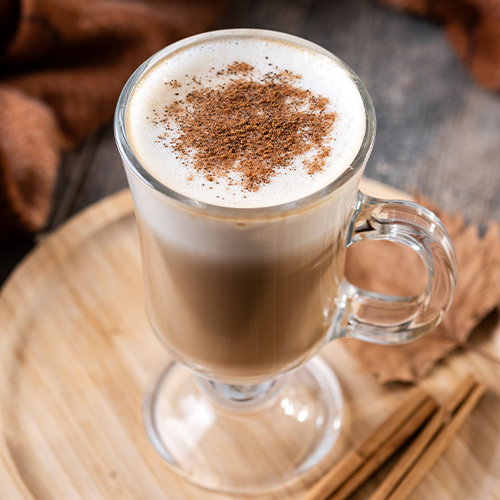
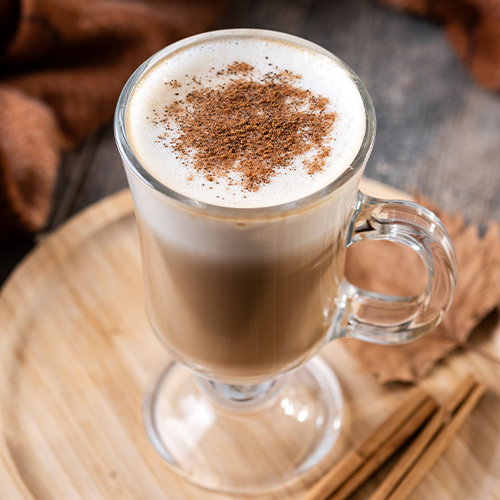
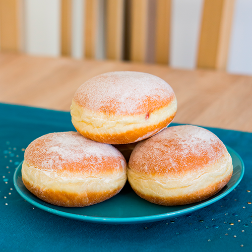
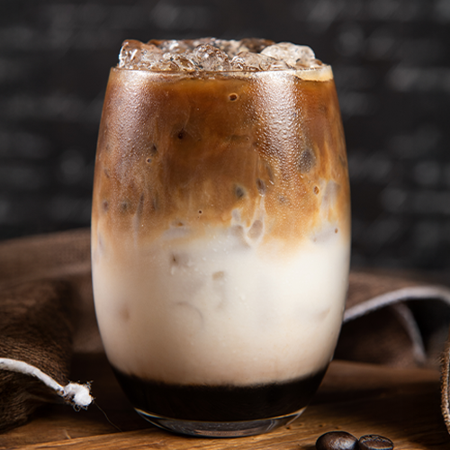
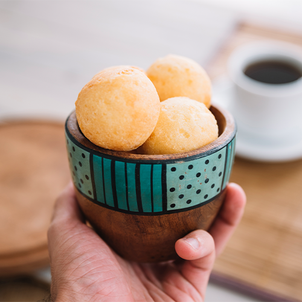
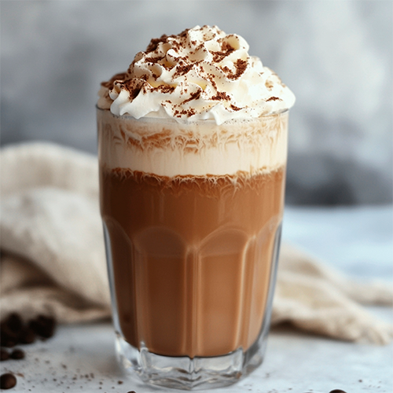
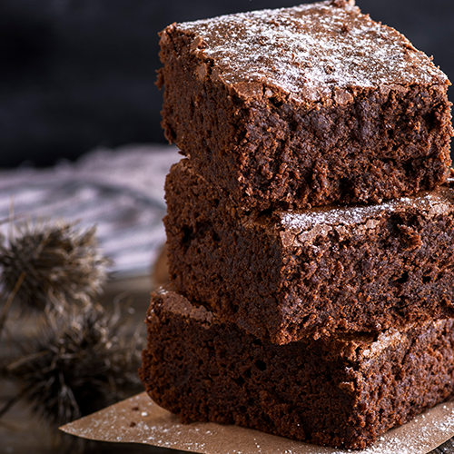

Cappuccino cremoso
Nosso clássico mais pedido, com espuma de leite perfeita.
Escolha entre bebidas quentes, geladas e acompanhamentos deliciosos.
Nosso clássico mais pedido, com espuma de leite perfeita.
Polvilhada com açúcar, recheada com creme de baunilha bem cremoso.
Infusão lenta de 12h, sabor suave e adocicado.
Assado na hora, crocante por fora e macio por dentro.
Delicioso café espresso, chocolate cremoso e leite vaporizado, finalizado com chantilly.
Feito na casa, combina perfeitamente com qualquer café.
Trabalhamos com microlotes de café especial, torrados semanalmente para garantir frescor e aroma. Do espresso ao filtrado, cada xícara conta uma história de sabor.
Cada lote é escolhido à mão, garantindo aroma e sabor incomparáveis.
Décadas de tradição em torrefação, preservando o melhor do café brasileiro.
Frescor garantido: trabalhamos com pequenos lotes para máxima qualidade.
Parceria com produtores locais, respeitando a terra e as pessoas.
A Grão Dourado nasceu em Florianópolis em 2022 com um propósito simples e ao mesmo tempo profundo: transformar o café em uma experiência que vai além da xícara. Desde o início, acreditamos que cada grão carrega consigo histórias de terra, de mãos que cultivam e de tradições que se renovam.
Nossa equipe é formada por baristas apaixonados e produtores parceiros que compartilham da mesma visão: o café como ponte entre pessoas, memórias e momentos. Trabalhamos lado a lado com quem planta, colhe e torra, garantindo que cada etapa seja feita com respeito à natureza e valorização ao trabalho justo.
Sustentabilidade não é apenas um valor, é parte do nosso dia a dia. Buscamos práticas que preservam o meio ambiente e fortalecem a comunidade local, sempre com o olhar voltado para a qualidade. Cada xícara servida é resultado de dedicação, cuidado e amor por aquilo que fazemos.
Na Grão Dourado, o café é mais do que bebida: é cultura, é aconchego, é convite para uma boa conversa. Venha nos visitar e descubra como um grão especial pode mudar a forma de viver os pequenos prazeres da vida.
Quer reservar um horário, fazer um pedido ou apenas conversar?